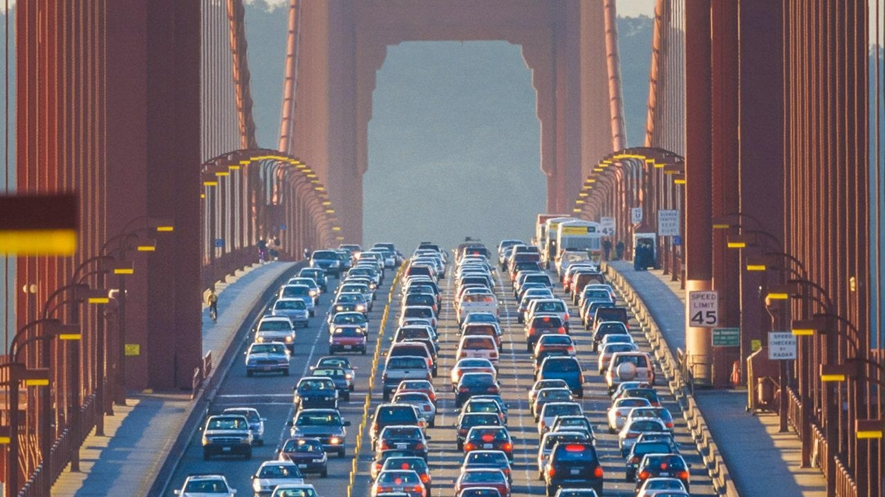

New study reveals why Americans are fleeing big citiesCounting the people voting with their feet, we're witnessing a political landslide rarely seen in national politics. Between 2020 and 2022, San Francisco lost 7.5% of its population. New York City lost over 5.3%. In stark contrast, Fort Worth, Texas' population grew nearly 4.2%. Charlotte, North Carolina's population grew nearly 2.7%. Apologists for the declining cities will cite COVID-19 as a causal explanation and even optimistically claim that the declines have moderated. Such blind optimism overlooks the obvious – people are leaving big cities like San Francisco, New York and Boston because of bad public policy choices in those cities. They're moving to other places like Fort Worth that are offering a higher quality of life. People choose where they live for many reasons. Some of these reasons are personal – preferring a small town to a big city or someplace that is sunny compared to someplace where winters are cold and snowy. Many other location decisions are policy driven. Are the roads well maintained? Is the cost of living affordable? Are the streets safe and free of rampant homelessness? Are there abundant economic opportunities? Based on the results of a new Pacific Research Institute Free Cities index ranking the nation's 50 largest cities, whether city and state policies promote growth has a huge impact on where people decide to live and where businesses decide to invest. Categorizing the 50 largest cities based on the latest population trends, there are 17 cities whose populations have declined by more than 1% between 2020 and 2022 (which we call declining cities), 19 cities whose population change was between a 1% decline and a 1% increase (stagnant cities) and 14 cities whose population grew by more than 1% (growth cities). There are important lessons in these three categories of cities for state and local policymakers. First, the highest state and local marginal income tax rates are much higher in the declining cities – 9% compared to 5.5% in the stagnant cities and 3% in the growth cities. Higher income tax rates deter economic growth and entrepreneurship, diminishing economic opportunity in the high tax cities compared to the lower taxed cities. In addition to levying a tax system that discourages entrepreneurship, the declining cities also overburden average families with a higher combined sales, income and property tax burden. The average burden from these taxes is over 22% higher in the declining cities compared to the growth cities. Perhaps these higher tax burdens could be justified if these cities offered a higher quality of life and superior public services compared to the cities with lower tax burdens. But the opposite is true. Whether it is providing an affordable place to live or cleaning up homelessness, the declining cities perform much worse than the growth cities. When you consider taxes, regulations, affordability, quality of life measures or the business environment, the declining cities have, on average, the worst policy environments in the Free Cities Index rankings while the growth cities have policy environments that encourage growth. These population trends provide important feedback for state and local policy leaders if they will listen. Cities attract residents and businesses when they impose a less costly regulatory environment and less burdensome taxes, while providing affordable places to live and efficiently provide core public services. And the reverse is true. Cities encourage residents and businesses to leave when they implement anti-growth policies that reduce economic opportunities, decrease affordability and worsen the city's quality of life. Vibrant cities drive economic prosperity and technological innovations. They also foster cutting edge scientific breakthroughs and invigorate artistic expression. Healthy population trends help cities serve these vital roles. Attracting families and entrepreneurs requires local policy leaders to establish policy environments that reward entrepreneurship, keep taxes low, make it easy to start or expand a business and create jobs, and provide core public services cost efficiently. |
 |